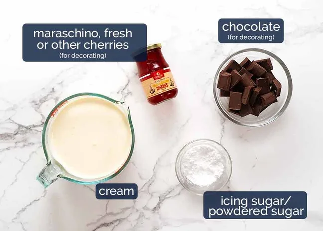
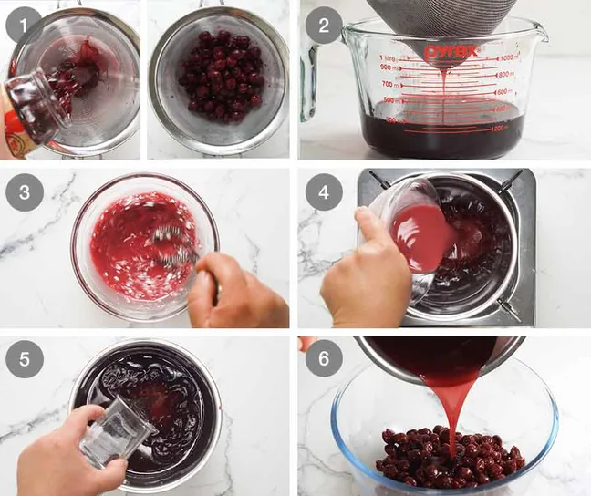
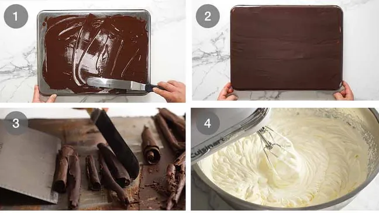
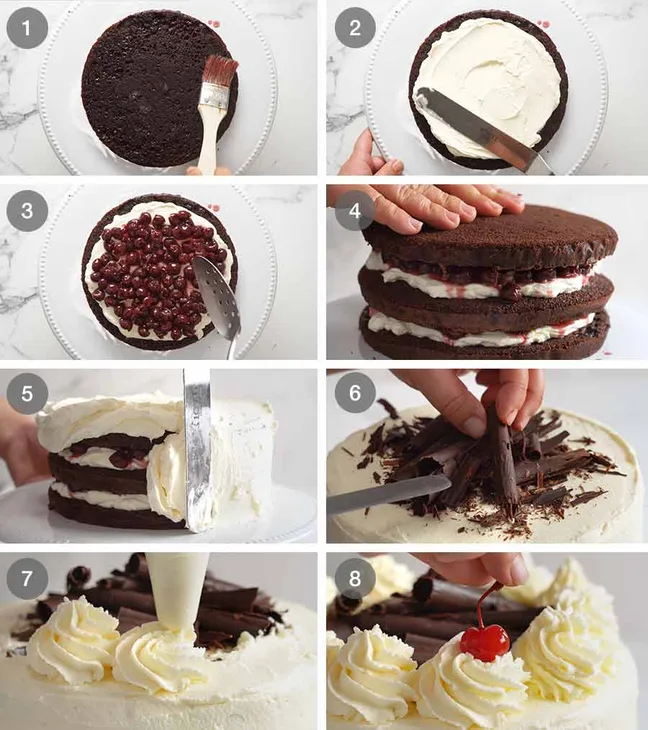
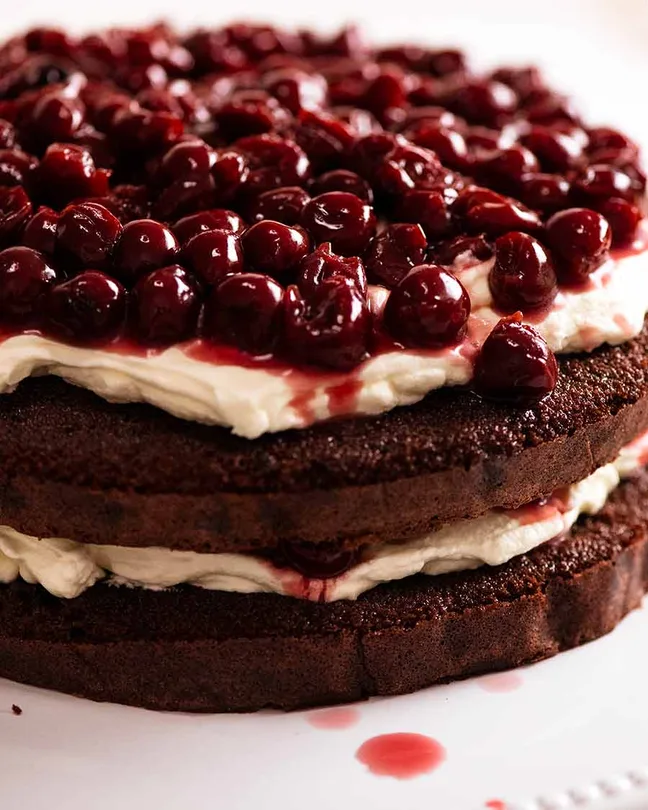

What Black Forest Cake taste like
Black Forest cake tastes rich, chocolatey, creamy, and slightly fruity. The chocolate cake is deep and moist, the whipped cream is light and not too sweet, and the cherries add a juicy, slightly tart burst that balances the richness. Altogether, it has a luxurious but fresh flavor—sweet, creamy, and indulgent without being too heavy.
Ingredients for Black Forest Cupcake
Eggs - provide structure and aeration, helping the sponge rise and stay light.
Room-temperature eggs - whip better and trap more air for a fluffy sponge.
Cocoa powder - gives chocolate flavour and colour to the cake.
Cherry layer and syrup
Black Forest Cake is sandwiched with cherries, and the cake layers are also soaked with cherry syrup which imparts flavour and moisture to the sponge layers which are often (sadly!) too dry otherwise. Here's what you need:

Morello (sour) cherries - provide soft texture and juicy flavour; the syrup is also used to brush the cake layers.
Cherry syrup/juice - moistens the cake and enhances the cherry flavour.
Kirsch (cherry liqueur) - adds authentic Black Forest aroma and depth of flavour.
Decorations
Cream - whipped to create light, airy layers and balance the richness of the cake.
Cherries for decorating - add colour, freshness, and a classic Black Forest finish.
Chocolate - used for curls or shavings to decorate and enhance chocolate flavour.
How to make Black Forest Cake
Sift flour and cocoa - removes lumps and reduces the need for overmixing.
Beat eggs and sugar - beat until pale and tripled in volume to create lift.
Fold in flour - gently fold to keep the batter light and airy.
Fold in butter - mix carefully until the batter is smooth.
Bake - divide into pans and bake at 180°C until cooked through.
Cool - let cakes cool completely before assembling.
Cherry syrup and cherries
Drain cherries – drain the jar and reserve the cherry liquid.
Measure juice - set aside 1/4 cup of cherry juice.
Make cornflour slurry - mix the reserved juice with cornflour.
Prepare cherry syrup - heat sugar with cherry juice until dissolved, then add slurry and cook until lightly thickened.
Add kirsch - stir in the cherry liqueur off the heat.
Soak cherries and cool - pour syrup over cherries and let cool completely.
Chocolate curls
Melt chocolate - gently melt the chocolate in short microwave bursts.
Spread chocolate - pour and spread thinly over the back of a baking tray.
Chill briefly - refrigerate until just set.
Scrape curls - scrape the chocolate at an angle to form curls.
Whip cream - beat cream until stiff just before assembling.
Assembling Cake
Brush with cherry syrup: Brush a cake layer with 1/4 cup of the cherry syrup that the cherries are soaking in.
Add cream layer: Spread with 1 cup of whipped cream, leaving a 1cm (1/2″) border (the weight of cake when placed on top and gently pressed will push the cream to edge).
Layer cherries: Top the cream layer with half the cherries (in a single layer), using a slotted spoon to drain well. Don't pat them dry though, want the cherries juicy!
Repeat: Top with a cake layer, brush with 1/4 cup syrup, spread with 1 cup cream, top with remaining cherries, and place 3rd cake layer on top. Finish by brushing the top layer with 1/3 cup of the cherry syrup. You will have some syrup leftover.
Cover with cream: Reserve 1 1/2 cups whipped cream for piping decorations later. Spread the remaining cream over the top and side of the cake.
Chocolate shavings: Pile large chocolate curls in the middle (I stack them in a tent shape like I’m building a fire!) Use the smaller broken shavings to coat the base of the sides of the cake (with cold hands, scoop some shavings, press on side, repeat).
Pipe dollops of cream around the edge using a large star-tipped nozzle and Top with cherries, and rest cake: Top each cream dollop with a maraschino cherry.